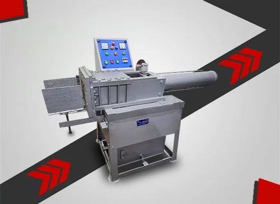

Dhoop Stick Machine
MAKE PERFECT WET DHOOP STICKS WITH SMOOTH SHAPE & UNIFORM QUALITY
| S. No | Capacity | Per Day Capacity | Power Req. | Size | HxBxW |
|---|---|---|---|---|---|
| 1 | 450 kg | 8 hrs | 3 H.P. | 6 × 4.5 | 41 × 36 × 21 |
| 2 | 600 kg | 8 hrs | 5 H.P. | 7.5 × 5.5 | 33 x 39 x 24 |
| 3 | 1000 kg | 8 hrs | 7.5 H.P. | 7 × 8 | 38 x 47 x 43 |
| 4 | 1000 kg | 8 hrs | 3 H.P. (Hydraulic) | 7 × 8 | 38 x 47 x 57 |
| 5 | 2500 kg | 8 hrs | 7.5 H.P. (Hydraulic) | 10 × 10 | 38 x 30 x 60 |
Best Dhoop Stick Machine Manufacturer in Delhi - V.S Engineers
Looking for a reliable Dhoop Stick Machine Manufacturer? V.S. Engineers is one of India's most trusted names in dhoop and incense machinery. With over 35+ years of rich industry experience since 1985, we design and build high-performance Wet Dhoop Stick Machines that help manufacturers produce smooth, uniform, premium-quality dhoop sticks — batch after batch.
From small home-based startups to large commercial dhoop factories, our machines handle capacities from 450 kg to 2500 kg per 8-hour shift and are trusted by leading incense brands across India.
What Is a Wet Dhoop Stick Machine?
A Wet Dhoop Stick Machine Manufacturer is a specialized industrial machine used to produce solid dhoop sticks directly from wet incense paste — without using bamboo sticks. It works on an extrusion principle where the prepared wet mixture (made of charcoal powder, jigat, wood powder, herbs, fragrance oils, and binders) is fed into the hopper, compressed, and shaped into uniform cylindrical sticks.
Unlike dry agarbatti machines that coat powder on bamboo, a wet dhoop stick machine creates bamboo-free, solid incense sticks that are perfect for temples, spiritual rituals, and premium fragrance products.
About V.S. Engineers — 35+ Years of Trusted Manufacturing
V.S. Engineers started its engineering journey in 1985 in New Delhi with one clear goal — to build dhoop and incense machinery that lasts a lifetime. Today, after more than three decades, our machines run daily in dhoop factories, agarbatti units, and top incense brands across India.
Our manufacturing facility is located in DSIIDC Industrial Area, Bawana, New Delhi. Every machine is designed, fabricated, tested, and quality-checked in-house by our experienced engineering team. Big names in the incense industry trust us — and so do hundreds of small businesses who started their journey with a single V.S. Engineers machine.
Types of Wet Dhoop Stick Machines We Offer
- Fully Automatic Wet Dhoop Stick Machine — high-speed, minimum labour
- Semi-Automatic Wet Dhoop Stick Machine — perfect for medium-scale production
- Hydraulic Wet Dhoop Stick Machine — heavy-duty for dense paste and thick sticks
- Manual & Custom Models — designed on request
Every machine is tested under full load conditions before dispatch, so you get a machine that is ready to run from day one.
Key Features of Our Wet Dhoop Stick Machine
- Heavy-duty body built from premium mild steel for long life
- Precision die for uniform stick size, shape, and density
- Powerful motor options — 3 HP to 7.5 HP (electric and hydraulic)
- Adjustable stick diameter — from 3 mm to 10 mm as per your need
- Adjustable stick length — 2 inches to 12 inches
- Hydraulic pressure system for smooth extrusion of dense paste
- Low power consumption for cost-effective operation
- Simple, safe controls — easy for semi-skilled workers
- Low maintenance — long life of bearings, shafts, and dies
- Safety guards on all moving parts
- Handles both wet and dry paste in the same machine
Benefits of Using V.S. Engineers' Wet Dhoop Stick Machine
- Consistent stick size and shape — perfect for branded packaging
- Better burning quality thanks to uniform density
- Save 60–70% labour cost compared to manual production
- Higher output — up to 2500 kg per shift
- Reduced raw material wastage
- Faster ROI for new dhoop businesses
- Premium product quality commands better market price
- Smooth production even during 10–12 hour shifts
Why Choose V.S. Engineers?
-
35+ Years of Real Industry Experience
Since 1985, we have refined our designs based on actual factory feedback from India's biggest dhoop makers. That experience is built into every machine we manufacture.
-
Trusted by Leading Indian Brands
Big names in the incense industry choose V.S. Engineers because our machines deliver consistent output — day after day, year after year.
-
Complete Product Range
From Wet Dhoop Stick Machines to Raw Mixture, Crushing, Stick Cutting, and Dhoop Cone Machines — you get the full production line from a single trusted manufacturer.
-
Made in Delhi — Fast Service Access
Our Bawana, Delhi facility means quick delivery, fast spare parts supply, and easy on-site service across Delhi NCR and pan India.
-
Direct Manufacturer Pricing
Buy directly from the manufacturer — no dealer margin, no middleman. You get the best factory price.
-
Custom Solutions for Every Business
Whether you need 450 kg or 2500 kg output, standard or hydraulic — we build the exact machine your business needs.
-
Complete After-Sales Support
Free installation guidance, operator training, spare parts, and lifetime technical support.
Applications of Wet Dhoop Stick Machine
Our Wet Dhoop Stick Machine Manufacturer are used across many product categories:
- Wet dhoop stick production (bamboo-free solid sticks)
- Sambrani stick manufacturing
- Herbal and ayurvedic incense sticks
- Premium fragrance dhoop production
- Cow dung and organic dhoop sticks
- Temple and religious incense products
- Export-quality dhoop sticks
Industries We Serve
- Dhoop manufacturing factories
- Agarbatti and incense production units
- Religious and spiritual product brands
- Ayurvedic and herbal product makers
- Temple supply companies
- Export-focused incense businesses
- Startups in the fragrance industry
- Home-based cottage incense units
Service Locations Across India
Based in Bawana, New Delhi, we proudly deliver Wet Dhoop Stick Machines across:
Delhi NCR: Delhi, Gurgaon, Noida, Faridabad, Ghaziabad, Greater Noida, Sonipat
Pan India:Mumbai, Bangalore, Chennai, Kolkata, Ahmedabad, Jaipur, Lucknow, Hyderabad, Pune, Surat, Indore, Bhopal, Patna, Kanpur, Nagpur, Coimbatore, Bhubaneswar, and all other Indian cities.
Exports:We also support clients with overseas shipments to Nepal, Sri Lanka, UAE, Malaysia, and African markets on request.
Quality & Manufacturing Standards
Every Dhoop Stick Machine Manufacturer at V.S. Engineers is built with strict quality control:
- Premium grade mild steel with reinforced welding
- Branded motors with overload protection
- Industrial-grade hydraulic system (in hydraulic models)
- Precision-machined dies for accurate stick shape
- Powder-coated finish for rust resistance
- Full load trial run before dispatch
- Final QC check on noise, vibration, and finish
Only after passing all checks, the machine is packed with proper protection and dispatched to your location.
Raw Materials Used with Our Wet Dhoop Stick Machine
Our machine works efficiently with the following raw materials:
- Charcoal powder
- Jigat / joss powder (natural binder)
- Wood powder (sawdust)
- Herbal powders and roots
- Fragrance oils and perfumes
- Gum and water
We also guide new clients on the correct raw material ratios for the best burning quality and fragrance output.
Frequently Asked Questions
-
Who is the best Dhoop Stick Machine Manufacturer in Delhi?
V.S. Engineers is one of the most trusted Dhoop Stick Machine Manufacturers in Delhi, serving the incense industry since 1985. Based in DSIIDC Industrial Area, Bawana, New Delhi, we bring over 35+ years of engineering experience in building durable, high-output wet dhoop stick machines for manufacturers across India.
-
What is a Wet Dhoop Stick Machine and how does it work?
A Wet Dhoop Stick Machine is an industrial extrusion machine that produces bamboo-free solid dhoop sticks directly from wet incense paste. The prepared paste is fed into the hopper, compressed by hydraulic or mechanical pressure, and shaped into uniform cylindrical sticks through a precision die.
-
What is the price of a Dhoop Stick Machine in India?
The price of a Dhoop Stick Machine depends on capacity, motor type (electric or hydraulic), automation level, and customization. V.S. Engineers offers models from 450 kg to 2500 kg per 8-hour shift capacity. For the latest price list and a personalized quote, contact V.S. Engineers directly at +91 9891380503.
-
What is the production capacity of your Wet Dhoop Stick Machine?
Our standard models deliver production capacities of 450 kg, 600 kg, 1000 kg, and 2500 kg per 8-hour shift. Custom high-capacity machines are also available on request for large-scale factories.
-
Can the same machine make sticks of different sizes?
Yes. Our Wet Dhoop Stick Machine supports adjustable stick diameters from 3 mm to 10 mm and adjustable stick lengths from 2 inches to 12 inches. You can also change dies to produce different stick shapes and sizes.
-
What is the difference between hydraulic and mechanical Wet Dhoop Stick Machines?
A hydraulic wet dhoop stick machine uses hydraulic pressure — perfect for dense, thick paste and heavy-duty production with uniform shape. A mechanical machine uses cams and gears — faster and suitable for high-speed mass production of thinner sticks. V.S. Engineers manufactures both types based on your production needs.
-
Does V.S. Engineers deliver Wet Dhoop Stick Machines outside Delhi and export overseas?
Yes. V.S. Engineers delivers Wet Dhoop Stick Machines across India — including Mumbai, Bangalore, Ahmedabad, Chennai, Kolkata, Jaipur, Hyderabad, Lucknow, and all Delhi NCR cities like Gurgaon, Noida, Faridabad, and Ghaziabad. We also handle export shipments to Nepal, Sri Lanka, UAE, Malaysia, and African countries on request.
Get the Best Wet Dhoop Stick Machine — Contact V.S. Engineers Today
Ready to upgrade your dhoop production with a machine built to last? Partner with V.S. Engineers — the manufacturer trusted by dhoop makers across India for over 35 years.
Request a Free Quote Now for the best price, live demo, and expert consultation.